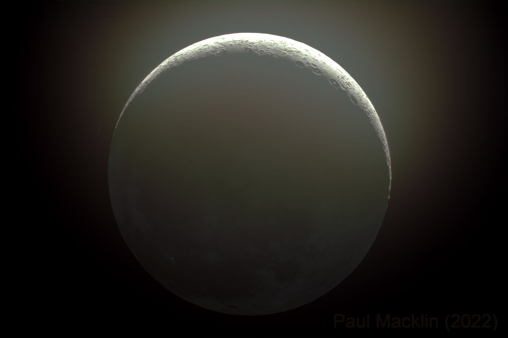
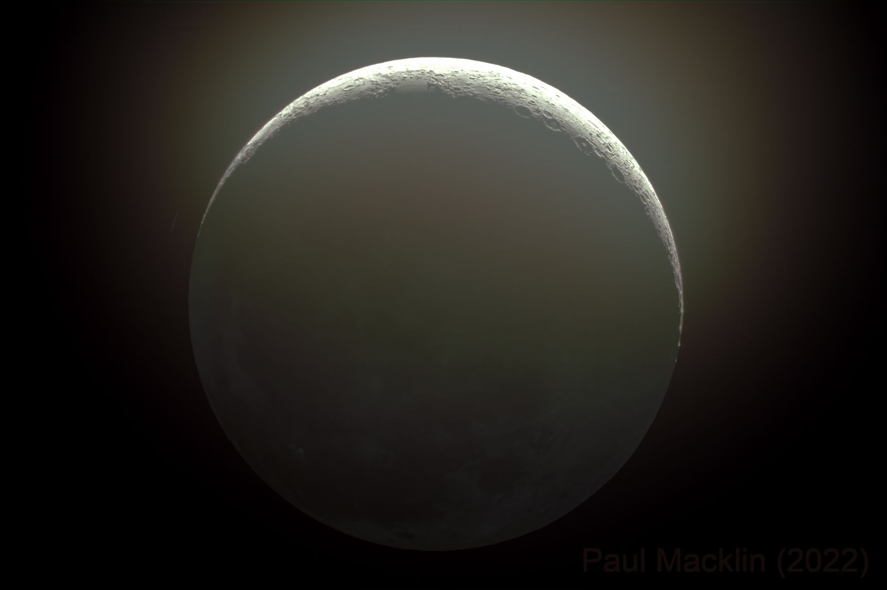

Luddy Eclipse 2024
Event Information
Come to the Luddy grounds on April 8th or watch the livestream to see the solar eclipse!
The partial eclipse starts at 1:49 pm; the total eclipse will last froom around 3:04-3:09 pm; the partial eclipse will end at 4:23 pm
Luddy has bought plenty of eclipse glasses for people to come to the grounds and watch the eclipse occur as well as see what we are doing in real time.
We will use telescopes with white light and hydrogen alpha filters to caputure images during the partial and total eclipse.
These images will be processed in real time on a livestream, and will later be made available on this website.
Some examples of the capabilities of this image processing taken and edited by Paul are shown below:
 

According to the path NASA has predicted, the eclipse will be in totality directly over Bloomington, Indiana, the home of Indiana University.
Therefore, we found it fitting for a group in the Luddy School of Informatics, Computing, and Engineering to get involved.

K12 Outreach
Our program is also in coordination with representatives from the Monroe County Community School Corporation (MCCSC).
Together we are working on providing an interactive lesson to students at the Academy to help them learn about the eclipse, our telescopes, and image processing.
More in Bloomington
Since this is such a huge event for Bloomington, other programs associated with Indiana University have programs that would be neat to look at.
As the date gets closer, more information will be posted here.
Layout by Skeleton